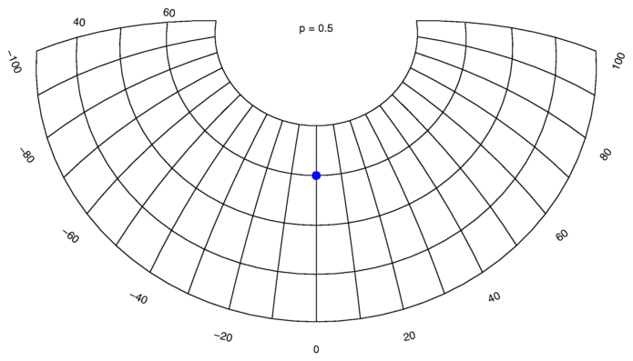
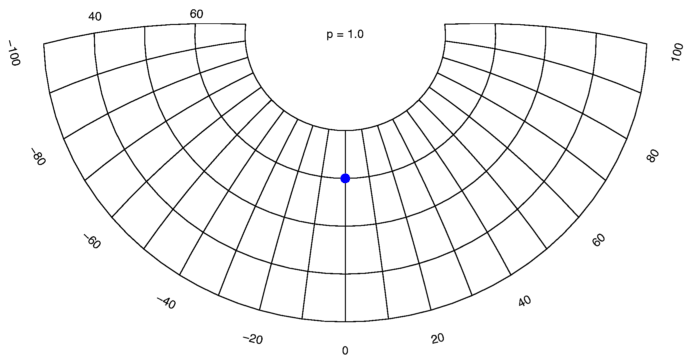

The arguments longitude and latitude set the central focal point for the projection.
The program will process the input file as follows: Whenever a line starts with two numbers, with nothing in between but spaces or tabs, these numbers are considered to be coordinates in degrees of longitude and latitude, and converted to new coordinates. These new coordinates, and the remaining part of the input line is printed to the output file. Other lines are copied from input to output unchanged.
Warning: Lines that were straight will get curved. If you have long straight line segments, delimited only by end points, you need to split those lines up into smaller segments first.
The scaling along the edge of all circles with the focal point as centre will be identical, regardless of the radius of the circle.
The scaling along the lines radiating from the centre outwards will be distorted. They are shortened farther from the centre.
This projection will only allow you to map half the surface of the earth, before the projection folds onto itself along the edges.
The scaling along the lines radiating from the centre outwards will be without distortion.
This projection allows you to map the entire surface of the earth onto a single map.
Use a value between 0 and 1 for a mixed distortion.
The maps below show examples of projections for several values of -p. The focal point is indicated by the blue spot.

